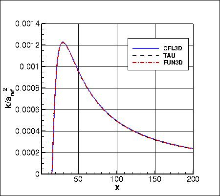
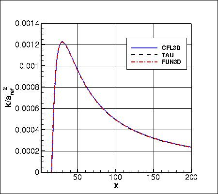

Results are shown here from 2 compressible codes
so that the user may compare their own compressible code results. Multiple grids were
used so the user can see trends with grid refinement. Different codes will behave
differently with grid refinement depending on many factors (including code order of accuracy
and other numerics),
but it would be expected that as the grid is refined the results
will tend toward an "infinite grid" solution that is the same.
Be careful when comparing details: any differences in boundary conditions or flow conditions
may affect results.
Note that this case was previously referred to as a 2D Planar Shear, but it is
more appropriately referred to as a 2D Coflowing Jet. Some of the figures associated with this
case may still have the word "shear" in them.
Two independent compressible RANS codes,
CFL3D and TAU, were used to compute this
coflowing jet flow with the SSG/LRR-RSM-w2012 second-moment Reynolds stress transport model
(see full description on
SSG/LRR Full Reynolds Stress Model page). The full series of 5 grids were used.
CFL3D is a cell-centered structured-grid code (NASA Langley), and TAU
is a node-centered unstructured-grid code (DLR).
CFL3D used Roe's Flux Difference
Splitting, whereas TAU was run using central discretization with artificial matrix dissipation
for the mean flow equations and upwinding for the turbulence equations.
Both codes were run with
full Navier-Stokes,
and both codes used first-order upwinding for the advective terms of the turbulence model.
Details about the codes can be found on their respective websites
(CFL3D,
TAU).
The codes were not necessarily run to machine-zero iterative convergence, but an attempt was made to converge
sufficiently so that results of interest were well within normal engineering tolerance and
plotting accuracy. For example, for CFL3D the density residual was typically
driven down below 10-13. It should be kept in mind that many of the files given below
contain computed values directly from the codes,
using a precision greater than the convergence tolerance (i.e., the values
in the files are not necessarily as precise as the number of digits given).
The freestream turbulence values used by both CFL3D and TAU for this case were
Tu=0.1% and  .
(Note that these are not the default values in CFL3D.) It was discovered that using the
same freestream turbulence values in both codes was important for this particular case.
.
(Note that these are not the default values in CFL3D.) It was discovered that using the
same freestream turbulence values in both codes was important for this particular case.
For freestream turbulence BCs, both codes assume isotropic turbulence
conditions (identical normal stresses, zero diagonal stresses).
For the interested reader, typical input files for this problem are given here:
CFL3D:
TAU:
The following plot shows the convergence of the drag coefficient due to
skin friction on both sides of the thin plate between -10 < x < 0
with grid size for the two codes.
In the plot the x-axis is plotting 1/N1/2, which is proportional to
grid spacing (h).
At the left of the plot, h=0 represents an infinitely fine grid.
Both codes go toward approximately the same result on an infinitely refined grid.
Using the uncertainty estimation procedure from the Fluids Engineering Division of the ASME (Celik, I. B.,
Ghia, U., Roache, P. J., Freitas, C. J., Coleman, H., Raad, P. E.,
"Procedure for Estimation and Reporting of Uncertainty Due
to Discretization in CFD Applications," Journal of Fluids Engineering, Vol. 130, July 2008, 078001, https://doi.org/10.1115/1.2960953), described in Summary of Uncertainty Procedure,
the finest 3 grids yield the following for drag coefficient on the thin plate:
| Code |
Computed apparent order, p |
Approx rel fine-grid error, ea21 |
Extrap rel fine-grid error, eext21 |
Fine-grid convergence index, GCIfine21 |
| CFL3D |
3.37 |
0.138% |
0.015% |
1.960% |
| TAU |
1.19 |
0.566% |
0.439% |
0.551% |
The following plots show u-velocity (nondimensionalized by reference speed of
sound) at 3 different locations in the jet: (1) x=2.71623, (2) x=29.2468, and
(3) x=95.501.
As seen, both codes are tending toward similar results
as the grid is refined.
Using the uncertainty estimation procedure from the Fluids Engineering Division of th
e ASME (Celik, I. B.,
Ghia, U., Roache, P. J., Freitas, C. J., Coleman, H., Raad, P. E.,
"Procedure for Estimation and Reporting of Uncertainty Due
to Discretization in CFD Applications," Journal of Fluids Engineering, Vol. 130, July 20
08, 078001, https://doi.org/10.1115/1.2960953), described in Summary of Uncertainty Procedure,
the finest 3 grids yield the following:
| Code |
Quantity |
Computed apparent order, p |
Approx rel fine-grid error, ea21 |
Extrap rel fine-grid error, eext21
| Fine-grid convergence index, GCIfine21 |
| CFL3D |
u near x=3 |
0.86 |
0.047% |
0.057% |
0.071% |
| CFL3D |
u near x=29 |
5.33 |
0.001% |
< 0.001% |
0.067% |
| CFL3D |
u near x=96 |
1.16 |
0.023% |
0.019% |
0.023% |
| TAU |
u near x=3 |
oscillatory convergence |
0.001% |
N/A |
N/A |
| TAU |
u near x=29 |
1.93 |
0.035% |
0.012% |
0.016% |
| TAU |
u near x=96 |
3.36 |
0.007% |
0.001% |
0.099% |
The data file that generated all the above plots is given here:
convergence_ssglrrrsm.dat.
The u-velocity along x at y=0 from both codes on the finest grid
is shown in the next plot.
Both codes are seen to yield nearly identical results
over the entire domain.
The data file that generated the above plot is given here:
uvel_y_0_ssglrrrsm.dat.
The u-velocity along y at three x-stations from both codes on the finest grid
is shown in the next three plots. Again, both
codes are seen to yield nearly identical results.
The data files that generated the above plot are given here:
uvel_x_3_ssglrrrsm.dat,
uvel_x_29_ssglrrrsm.dat,
uvel_x_96_ssglrrrsm.dat.
This type of flow exhibits self-similar behavior far enough downstream.
The velocity can be normalized as (u-u1)/(um-u1),
where u1 is the velocity at the edge of the outer stream, and
um is the peak (centerline) velocity. When plotted against y/b,
where b is the halfwidth (location where u-u1 is half of
um-u1), the results can be compared
to the experimental data of Bradbury and Riley (J. Fluid Mech
27(2):381-394, 1967,
https://doi.org/10.1017/S0022112067000400).
In the following plot, CFL3D and TAU results are taken from the
three x-locations x=29.2468, x=64.2188, and x=95.501. The
first location is not far enough downstream to be approximately self-similar.
The data file that generated the above plot is given here:
normalized_u_ssglrrrsm.dat.
Contours of the nondimensional Reynolds stress variables
( ) as well as
nondimensional omega from the two codes on the finest grid are shown
in the following plots (y-scale expanded for clarity). The first set of contours
are in the farfield, and the second set are near the thin plate. Results from the
two codes are nearly the same.
) as well as
nondimensional omega from the two codes on the finest grid are shown
in the following plots (y-scale expanded for clarity). The first set of contours
are in the farfield, and the second set are near the thin plate. Results from the
two codes are nearly the same.
The data files that generated the above plots are given here:
turb_contours_cfl3d_ssglrrrsm.dat.gz (11.0 MB),
(structured, at cell centers) and
turb_contours_tau_ssglrrrsm.dat.gz (19.0 MB),
(unstructured, at grid points). Note that these are all gzipped
Tecplot
formatted files, so you must either have Tecplot or know how to read their format in order to use these
files.
Using the finest grid, extracted nondimensional k and omega profiles at
x=29.2468 are shown below.
The data file that generated the above profile is given here:
ssglrrrsm_k_omega_29.dat.
Using the finest grid, extracted nondimensional k along y=0 is shown below (note that
for CFL3D the data are extracted along the cell center nearest y=0).
The data file that generated the above profile is given here:
ssglrrrsm_k_0.dat.
The SSG/LRR-RSM-w2012 model relies on the minimum distance to the nearest wall. For this case,
contours of this function (near the thin plate, which is the only wall in the
domain) are shown in the following plot, for the coarse grid 3 levels down from the finest
grid. The y-scale has been expanded for clarity.
The data file that generated the above plot is given in
mindist.dat (unstructured, at grid points). Note
that this is a
Tecplot
formatted file, so you must either have Tecplot or know how to read their format in
order to use it.
It is important to note that computing minimum distance by searching along grid lines is
incorrect, and is not the same as computing actual minimum distance to the nearest wall for this grid. Using
the former method will yield differences in the results. The following sketches
demonstrate the concept of minimum distance. Improperly-calculated minimum distance
functions will particularly produce incorrect results for cases in which the
grid lines are not perfectly normal to the body surface,
or when the nearest body does not lie in the current grid zone.
Note that when the nearest wall point is a sharp convex corner or edge (like an airfoil or wing trailing edge) then the
correct minimum distance is the distance to that corner or edge, which is not a wall normal.


The codes were also run with the
LRR/SSG-RSM-w2012-SD variant.
Results were essentially the same as
LRR/SSG-RSM-w2012 at upstream locations very near the dividing plate, but the
spreading rates were different, so the results varied more significantly downstream. The
two codes CFL3D and TAU were again consistent with each other as the grid was refined, as shown in the
following plots.
SSG/LRR-RSM-w2012 results from FUN3D are shown alongside the CFL3D and TAU results below.
All three codes are consistent.
 

Return to: 2D Coflowing Jet Verification Case Intro Page
Return to: Turbulence Modeling Resource Home Page
Recent significant updates:
04/05/2016 - re-named the case 2D Coflowing Jet
Page Curators: Christopher Rumsey,
Ethan Vogel,
Clark Pederson
Last Updated: 03/01/2023